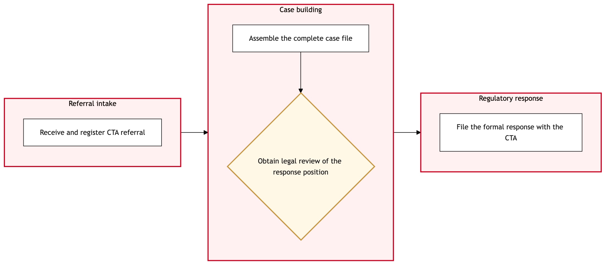

Updated 2026-08-18
CTA Escalation and Regulatory Response
A CTA-referred complaint is escalated and a formal regulatory response is prepared, distinct from the standard entitlement determination in AC-CX-CR-02, when the Canadian Transportation Agency itself becomes involved.
Air Canada contextA CTA referral is a different order of process from a standard complaint: it carries a hard regulatory deadline, and the response has to be defensible to a regulator, not just satisfactory to the customer.
Process flow
Click to zoom

Process steps
▼
Phase 1 — Referral intake
1 steps
| Step | Activity | Role | System | Input | Output | KPI | Dec | Exc | Pain point |
|---|---|---|---|---|---|---|---|---|---|
| 1.1 | Receive and register CTA referral | Regulatory Affairs Analyst | CTA Complaint InterfaceA | CTA notification | Registered referral with regulatory deadline | Registered within 1 business day of receipt at 100 percent | N | N | The CTA's own notification format and channel are separate from Air Canada's standard complaint intake |
▼
Phase 2 — Case building
2 steps
| Step | Activity | Role | System | Input | Output | KPI | Dec | Exc | Pain point |
|---|---|---|---|---|---|---|---|---|---|
| 2.1 | Assemble the complete case file | Regulatory Affairs Analyst | Salesforce Service CloudA | Referral and original complaint history | Assembled case file with full evidence | Assembled within the first half of the response window at 100 percent | N | N | Assembling a defensible file means pulling records from booking, operations and the original case together |
| 2.2 | Obtain legal review of the response position | Regulatory Affairs Analyst | Salesforce Service CloudA | Assembled case file | Legally reviewed response position | Legal review completed before filing for 100 percent of CTA referrals | Y | N | Legal review timelines have to fit within the CTA's own hard deadline, which does not flex |
▼
Phase 3 — Regulatory response
1 steps
| Step | Activity | Role | System | Input | Output | KPI | Dec | Exc | Pain point |
|---|---|---|---|---|---|---|---|---|---|
| 3.1 | File the formal response with the CTA | Regulatory Affairs Analyst | CTA Complaint InterfaceA | Reviewed response position | Filed regulatory response | Filed within the CTA's required deadline at 100 percent | N | N | A missed regulatory filing deadline is itself a compliance failure independent of the underlying case merits |
Swim lanes
Regulatory Affairs Analyst1.1 2.1 2.2 3.1
Systems touched
CTA Complaint InterfaceASalesforce Service CloudA
Key performance indicators
- Registered within 1 business day of receipt at 100 percent
- Legal review completed before filing for 100 percent of CTA referrals
- Filed within the CTA's required deadline at 100 percent
- Response upheld on subsequent CTA review above target
Risks and control points
- A missed regulatory filing deadline constituting a compliance failure independent of case merits
- Legal review timelines having to fit within a hard CTA deadline that does not flex
- Assembling a defensible file requiring records from multiple systems not originally designed to be pulled together
- The CTA's own notification channel being separate from and inconsistent with standard complaint intake
Air Canada Process Wiki — process and systems reference compiled from public sources
for IT Application Management and User Support pre-sales discovery.
Built 2026-08-20. Every system carries an evidence tier: tier C is an industry pattern and tier U is an open
question, and neither should be asserted as fact about Air Canada without confirmation in discovery.
Not affiliated with or endorsed by Air Canada. Air Canada, Aeroplan and Altitude are trademarks of Air Canada.